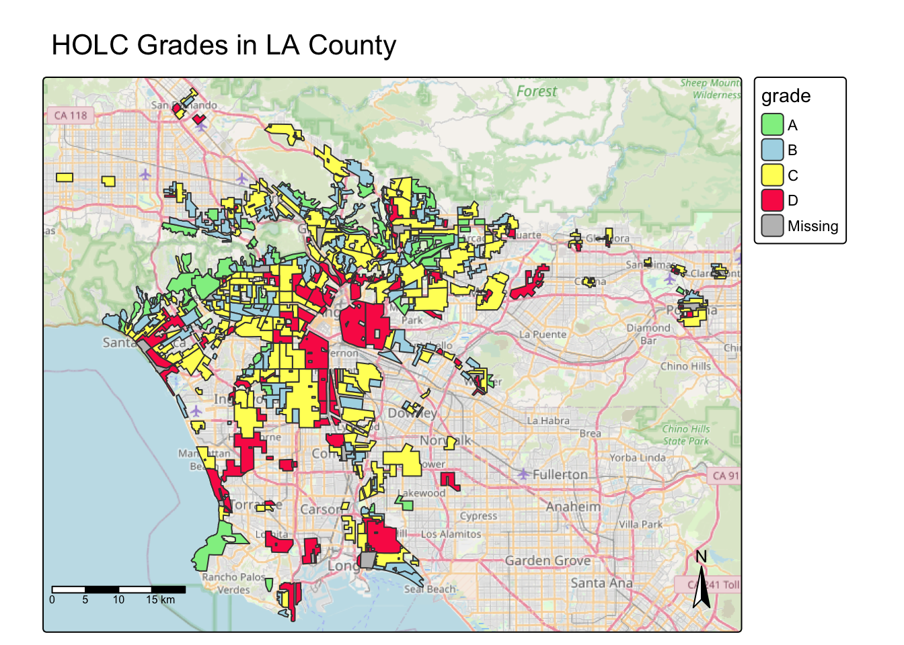
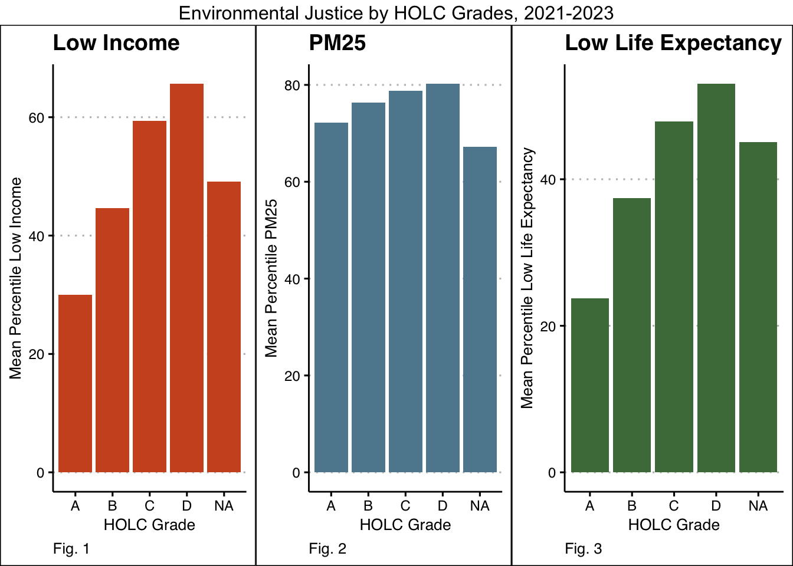
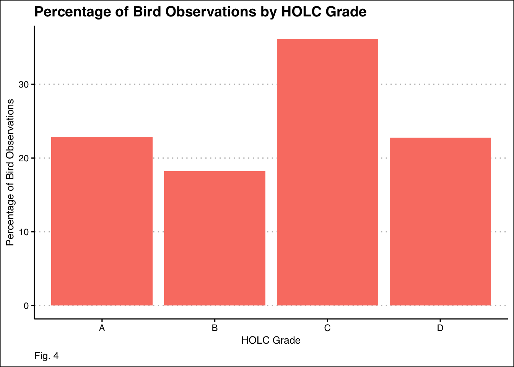

# Load library
library(tidyverse)
library(here)
library(tmap)
library(stars)
library(sf)
library(spData)
library(janitor)
library(knitr)
library(ggpubr)
library(ggthemes)
# Read in data
# EJScreen - Census
ejscreen <- st_read(here::here('data/ejscreen/EJSCREEN_2023_BG_StatePct_with_AS_CNMI_GU_VI.gdb'),
quiet = TRUE) %>% # Suppress CRS message
clean_names() %>%
# Filter to LA County
filter((st_abbrev == 'CA') & (cnty_name == 'Los Angeles County')) %>%
select(shape_length, shape_area, Shape, id,
st_abbrev, cnty_name, region, acstotpop, lowincome, p_pm25, p_lifeexppct, p_lowincpct)
# HOLC Redlining
holc <- st_read(here::here('data/mapping-inequality/mapping-inequality-los-angeles.json'),
quiet=TRUE) %>%
st_transform(crs = st_crs(ejscreen)) %>% # Transform CRS
clean_names()
# Biodiversity observations
birds <- st_read(here::here('data/gbif-birds-LA'),
quiet = TRUE) %>%
st_transform(crs = st_crs(ejscreen)) %>% # Transform CRS
clean_names()Exploring Environmental Justice in LA
Background
Present-day environmental justice may reflect legacies of injustice in the past. The United States has a long history of racial segregation which is still visible. During the 1930’s the Home Owners’ Loan Corporation (HOLC), as part of the New Deal, rated neighborhoods based on their perceived safety for real estate investment. Their ranking system, (A (green), B (blue), C (yellow), D (red)) was then used to block access to loans for home ownership. Colloquially known as “redlining”, this practice has had widely-documented consequences not only for community wealth, but also health1. Redlined neighborhoods have less greenery2 and are hotter than other neighborhoods3.
A recent study found that redlining has not only affected the environments communities are exposed to, it has also shaped our observations of biodiversity4. Community or citizen science, whereby individuals share observations of species, is generating an enormous volume of data. Ellis-Soto and co-authors found that redlined neighborhoods remain the most undersampled areas across 195 US cities. This gap is highly concerning, because conservation decisions are made based on these data.
(Background provided by Ruth Oliver, published here: https://eds-223-geospatial.github.io/assignments/HW2.html#fn1)
Purpose
The purpose of this analysis is to test the hypothesis that historic redlining practices have a lingering effect on environmental justice today in LA County.
1) Prepare Environment
2) Historical Redlining Neighborhoods Map
# Create redling district map
map1 <-
# Provide OpenStreet Basemap
tm_basemap(server = "https://tile.openstreetmap.org/{z}/{x}/{y}.png", alpha = 0.7) +
tm_shape(holc) + # Project HOLC data
tm_polygons(fill = 'grade',
palette = c(
"A" = "lightgreen", # Define color palette
"B" = "lightblue",
"C" = "#FFFF66",
"D" = "#FA2A55")) +
tm_title(text = "HOLC Grades in LA County", # Add title
frame = FALSE) + # Remove frame
tm_scale_bar(position = c(0,0.1)) + # Add scalebar
tm_compass() # Add compass rose
map1
3) HOLC Grade Summary Table
# Confirm CRS matches. Print message
if (st_crs(holc) == st_crs(ejscreen)) {
print("CRS for ejscreen and holc are matching")
} else {
print("CRS DOES NOT MATCH")
}[1] "CRS for ejscreen and holc are matching"# Join ejscreen and holc by Shape (ejscreen) and geometry (holc)
joined = st_join(ejscreen, holc) %>%
st_drop_geometry()
# Get the count of each grade / total census blocks
pct_A <- (sum(joined$grade == 'A', na.rm = TRUE) / nrow(joined)) * 100
pct_B <- (sum(joined$grade == 'B', na.rm = TRUE) / nrow(joined)) * 100
pct_C <- (sum(joined$grade == 'C', na.rm = TRUE) / nrow(joined)) * 100
pct_D <- (sum(joined$grade == 'D', na.rm = TRUE) / nrow(joined)) * 100
pct_na <- (sum(is.na(joined$grade)) / nrow(joined)) * 100
# Summarize counts, grouped by grade
counts <- joined %>%
group_by(grade) %>%
summarize(tbl_counts = sum(lowincome))
# Create a dataframe of counts and percentages
pct_df <- data.frame(grade = c('A', 'B', 'C', 'D', 'No Grade'),
count = counts$tbl_counts,
percentage = c(pct_A, pct_B, pct_C, pct_D, pct_na))
# Turn dataframe into a kable table
pct_table <- kable(pct_df,
col.names = c("Grade", "Count", "Percentage"),
caption = "HOLC Grade Percentages in LA County")
pct_table| Grade | Count | Percentage |
|---|---|---|
| A | 85178 | 4.99555 |
| B | 423748 | 13.78505 |
| C | 1609160 | 34.02314 |
| D | 825883 | 14.97552 |
| No Grade | 1273102 | 32.22074 |
4) Summary of low income, air quality, and low life expectancy by HOLC Grade
# Low income housing
low_income <- joined %>%
group_by(grade) %>% #Group by grade
summarize(low_inc_mean = mean(p_lowincpct)) #Get the mean of percentile low income per grade
plot1 <- ggplot(low_income, aes(x = grade, y = low_inc_mean)) +
geom_bar(stat = 'identity', fill = '#CE5425') + #stat = 'identity' tells ggplot that the y values are actual data values, not just counts
labs(title = "Low Income",
x = "HOLC Grade",
y = "Mean Percentile Low Income",
caption = "Fig. 1") +
theme_clean() +
theme(plot.caption = element_text(hjust = 0)) # Move caption to the left
#Air quality (pm25)
pct_pm25 <- joined %>%
group_by(grade) %>% #Group by grade
summarize(pm25 = mean(p_pm25, na.rm=TRUE))
plot2 <- ggplot(pct_pm25, aes(x = grade, y = pm25)) +
geom_bar(stat = 'identity', fill = '#5E899E') +
labs(title = "PM25", x = "HOLC Grade",
y = "Mean Percentile PM25",
caption = "Fig. 2") +
theme_clean() +
theme(plot.caption = element_text(hjust = 0))
# Life expectancy
life_exp <- joined %>%
group_by(grade) %>%
summarize(lle = mean(p_lifeexppct, na.rm=TRUE))
plot3 <- ggplot(life_exp, aes(x = grade, y = lle)) +
geom_bar(stat = 'identity', fill = '#4b7a47') +
labs(title = "Low Life Expectancy", x = "HOLC Grade",
y = "Mean Percentile Low Life Expectancy",
caption = "Fig. 3") +
theme_clean() +
theme(plot.caption = element_text(hjust = 0))
annotate_figure( # Create caption-able object
ggarrange(plot1, plot2, plot3, # Combine plots
ncol =3, nrow = 1, # Specify shape
widths = c(1, 1, 1.1)), # Specify individual widths
# Caption top
top = text_grob('Environmental Justice by HOLC Grades, 2021-2023')) 
5) Interpretation
The figures above display analysis for three key metrics of quality of life as they correspond to redlining districts in LA County. Fig. 1 displays the mean percentile of low income homes found in each LA County census block. “Low income” is defined to be homes which have income equal to or less than twice the federal poverty level5. Fig. 2 displays the mean percentile of homes per census block that were found to have airborne particles of size 2.5 micrometers or smaller (PM25), a direct indicator of air quality. Fig. 3 displays the mean percentile of individuals with lower than average national life expectancy per census block5. For all three metrics, we see that lower HOLC grades (‘A’ being the highest, and ‘D’ being the lowest) are associated with higher poverty, higher air pollution, and higher mortality. This pattern supports the argument that when the Home Owners’ Loan Corporation (HOLC) classified neighborhoods by investment risk in the 1930s, it effectively established a housing value hierarchy – boosting property values in higher quality-of-life areas while devaluing those in lower quality-of-life, often low-income, communities. The fact that these patterns are easily visible nearly a century after redlining took place shows the long-lasting and still-present impact of classist policies in the early 20th century.
6) Biodiversity and Redlining
# Check geometry type for birds
print(paste("Geometry type for birds is", unique(st_geometry_type(birds))))[1] "Geometry type for birds is POINT"# Confirm CRS matches
if (st_crs(holc) == st_crs(birds)) {
print("CRS for birds and holc are matching")
} else {
print("CRS DOES NOT MATCH")
}[1] "CRS for birds and holc are matching"# Join birds and holc data
birds_holc <- st_join(birds, holc, join = st_within) # Using st_within because the birds are points, so they cannot be partially in/out of HOLC geometries
# Get counts of bird observations per HOLC grade
bird_grades <- birds_holc %>%
st_drop_geometry() %>% #Drop geometries
filter(!is.na(grade)) %>% # Drop NAs because there are so many it will get in the way of visualizing our analysis
count(grade, name = "count_grade") %>% # Return count by grade, rename this 'count'
mutate(percentage = (count_grade / sum(count_grade)) * 100)
fig4 <- ggplot(bird_grades, aes(x = grade, y = percentage)) +
geom_bar(stat = 'identity', fill = "#FA8072") +
labs(title = "Percentage of Bird Observations by HOLC Grade",
x = "HOLC Grade",
y = "Percentage of Bird Observations",
caption = "Fig. 4") +
theme_clean() +
theme(plot.caption = element_text(hjust = 0)) #Position caption on left
fig4
7) Interpretation
Ellis-Soto et. al’s 2023 paper found that so-called ‘desireable’ areas (redline districts with higher grades) were found to have more than twice the density of bird observations as lower-graded areas4. The results in Fig. 4 do not provide evidence of the same conclusion. Rather, Fig. 4 shows that bird observations are highest in ‘C’ Holt Districts, nearly identical in ‘A’ and ‘D’ districts, and lowest in ‘B’ districts. The abstract of Ellis-Soto et. al’s paper states that in their study they accounted for differences in vegetation, open space, population density, and climate of studied areas4. The analysis in this document did not account for these factors, which could be the reason our results reach such different conclusions. Based on the results in this analysis, there is no significant correlation between redlining districts and bird observations from 2021-2023.
References
1 Gee, G. C. (2008). A multilevel analysis of the relationship between institutional and individual racial discrimination and health status. American journal of public health, 98(Supplement_1), S48-S56.
2 Nardone, A., Rudolph, K. E., Morello-Frosch, R., & Casey, J. A. (2021). Redlines and greenspace: the relationship between historical redlining and 2010 greenspace across the United States. Environmental health perspectives, 129(1), 017006.
3 Hoffman, J. S., Shandas, V., & Pendleton, N. (2020). The effects of historical housing policies on resident exposure to intra-urban heat: a study of 108 US urban areas. Climate, 8(1), 12.
4 Ellis-Soto, D., Chapman, M., & Locke, D. H. (2023). Historical redlining is associated with increasing geographical disparities in bird biodiversity sampling in the United States. Nature Human Behaviour, 1-9.
5 U.S. Environmental Protection Agency. Overview of Demographic Indicators in EJSCREEN. Retrieved October 18, 2025, from https://19january2017snapshot.epa.gov/ejscreen/overview-demographic-indicators-ejscreen_.html